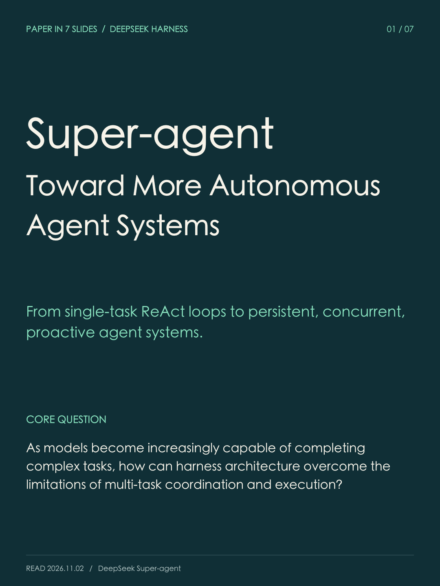
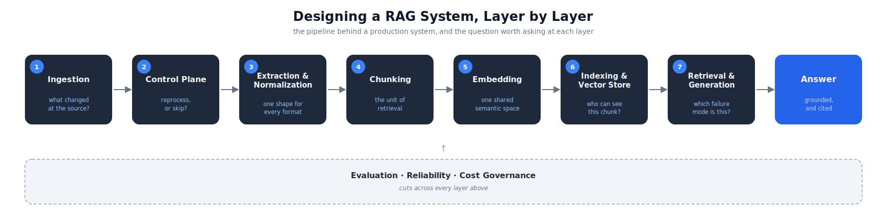

May 2025 – Feb 2026
Research Engineering Intern
Harvard Medical School & MGH
Designed clinical RAG and graph reasoning pipelines across 2,000+ guidelines and 54K+ medical knowledge chunks.
Healthcare AI, retrieval systems, and production ML shaped by product judgment—not just model capability.
4 published notes · medical AI / agents / engineering

Why a useful care system must distinguish what was recommended, what happened, and what changed afterward.
Read the note
Connecting patient-level decisions with population-level learning without confusing individual feedback with general evidence.
Read the note
Why persistent agents at scale still depend on the fundamentals of systems design: routing, state, recovery, and clear experimental limits.
Read the note
The pipeline behind a production system, and the question worth asking at each layer.
Read the noteMy work sits where model capability, workflow design, and production constraints meet.
I started in product management, discovering user needs and shaping solutions. I moved deeper into engineering because I wanted to build those ideas, test their limits, and own what happens after the demo.
At Harvard Medical School and Massachusetts General Hospital, I worked on clinical reasoning agents combining RAG, medical ontologies, graph traversal, and evidence-grounded LLM workflows.
At United Imaging Intelligence America, I built ML infrastructure for medical image annotation, from model benchmarking and TensorRT acceleration to distributed scheduling and reliable high-volume pipelines.
Keep output tied to evidence, provenance, and evaluation.
Build around how people actually make decisions.
Make prototypes survive real traffic and real failure modes.
Designed clinical RAG and graph reasoning pipelines across 2,000+ guidelines and 54K+ medical knowledge chunks.
Built medical imaging ML pipelines, TensorRT acceleration, distributed jobs, observability, and deployment tooling.
Led pharmaceutical B2B systems spanning settlement, supplier onboarding, master data, and high-availability services.
Engineering depth paired with product, operations, and technology management training.
A compact index of the problems, systems, and outcomes behind my work.
90% triage accuracy and 98% high-risk escalation coverage in a 500-patient pilot.
Supported 5 teams processing more than 80,000 images per day.
Served 170,000+ buyers and maintained a 99.9% API success rate.
Improved supplier contracting efficiency by 30% across complex data workflows.
Models, retrieval, backend services, infrastructure, and product strategy in one working stack.
PyTorch, TensorFlow, TensorRT, LangGraph, LangChain, LlamaIndex, Hugging Face, RAG, embeddings, evaluation, MLflow.
Python, Java, FastAPI, Flask, Django, Spring Boot, TypeScript, PostgreSQL, MongoDB, Redis, Elasticsearch, Neo4j.
AWS, Azure, GCP, Docker, Kubernetes, Terraform, RabbitMQ, Celery, Prometheus, Grafana, CI/CD.
Roadmaps, success metrics, stakeholder alignment, healthcare workflows, pharmaceutical B2B, data product operations.
I’m open to AI engineering, product-focused AI, healthcare AI, and intelligent systems opportunities.